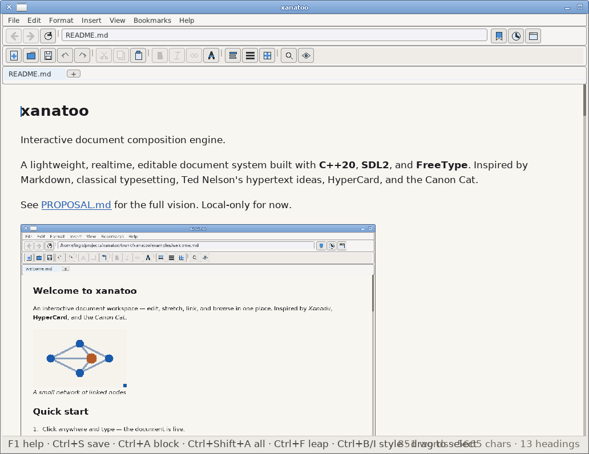

A document you can walk around in. Write in it, stretch it, link it, and read the rest of the world in the same window.
xanatoo is a lightweight, native hypertext workspace in the spirit of Xanadu, HyperCard and the Canon Cat. It edits Markdown, Org and structured documents in place; it also reads web pages, feeds, books and discussions through the same semantic layout system. Type, fold a section, or resize a pane, and the page reflows around you.

Version @version@ — a development snapshot; every file below is built from the same revision.
The Windows and browser versions are early offline editions. They include the editor, local document readers and passage links, but not the in-app network services. The browser preview does not save changes or import files from your computer yet.
There is no installer yet; Nix builds the program and every library it needs. With flakes enabled, run it directly:
nix run github:Grumbel/xanatoo
or open a file or address:
nix run github:Grumbel/xanatoo -- notes.md nix run github:Grumbel/xanatoo -- wikipedia:Ted_Nelson
Without Nix: use CMake with a C++20 compiler, SDL2, FreeType and the dependencies of the enabled optional features. See the build instructions.
Download the APK on the device and open it; Android will ask once to allow installs from your browser. Touch is first class: tap, drag and fling to scroll, long-press to select, pinch to zoom.
Unzip into the ports folder of the SD card (or add it
through PortMaster’s “install local zip”). The gamepad controls a software
pointer and scrolls; an on-screen keyboard handles text input.
Download the ZIP matching your Windows architecture and extract the whole
directory. Run bin/xanatoo.exe; the included libraries, styles,
toolbar icons, examples and fonts must stay alongside it. These are initial
MinGW-w64 builds without the built-in HTTP, Gemini or social-site readers.
Ordinary web links can still open in your default browser.
Open the live preview without installing anything. It starts with xanatoo’s welcome document and demonstrates text editing, layout and navigation. Changes exist only in the current session; refreshing the page discards them. File import, exports, online services and persistent storage are still planned.
Most document tools treat a link as a jump to another file. xanatoo treats a passage as something you can name, bookmark, mark in context, show on its own, or include elsewhere. Named sections and text quotes have addresses; the arrangement on screen is just one view of the content.
notes.md#id:introduction show the whole page; mark the section notes.md//id:introduction show the section as its own view
Fold a section to its heading or expand a stretchtext note in place. Switch from a flowing document to ebook-style pages, or change its appearance with a semantic style sheet. The document itself does not need to change.
Editing is direct: no source/preview split, no stale rendering. Local unsaved edits are kept as drafts in a content-addressed revision store, and the last session's tabs and reading positions can be restored.
Different sources become a common, navigable document structure, with headings, links, figures and threads where the source supports them:
A built-in directory collects links to feeds and sites. The search bar offers Wikipedia, arXiv, Internet Archive, book catalogues, discussion services, and independent web search engines, with custom engines in a small S-expression file.
Several reading and editing tools cooperate without separate modes or plugins:
Split the centre view, open a link from the left into the right, compare two documents with diff marks, or tear a tab into a floating/dockable document window. Outline, bookmarks, backlinks, and page navigation are dockable panels rather than copies of the document.
Bookmark a page, a selected quotation, or a reading position. Marks and margin ribbons bring the passage back in context. Reader mode hides web navigation clutter; paged mode lays the text out in one to three columns. Both are choices of view, not changes to the document.
Drag blocks to rearrange them, resize column gutters and images, include a labelled passage from another document, and set notes in the page margin. Footnotes, bibliography, math and figures belong to the semantic document, while typography comes from the chosen style.
Start with the feature tour or read the passage design to see where the hypertext model is heading.
Development status. This is experimental software. The built-in OpenSSL and Mbed TLS clients currently do not verify peer certificates; do not use them for sensitive or authenticated browsing. Service APIs may also change.
xanatoo is free software under the GPL, version 3 or later. The code, the issue tracker and the design notes live on GitHub. Start with PROPOSAL.md for the original vision, or the README for builds, formats and keyboard controls.